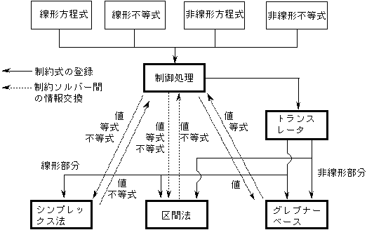

（６３）統合型制約ソルバー：Ｃｏｎｓｏｒｔ
マ シ ン：Multi-PSI
環 境：PIMOS
言 語：KL1
ソース量：1.9 MB
文 書：マニュアル (日本語)
概要
非線形連立不等式を解く制約ソルバーを提供するツールである。
構成

機能
Consortは、区間法とシンプレックス法、グレブナーベースの3通りの異なる手
法に基づいた制約ソルバーを用い、広範囲な非線形不等式を解くことができる。
非線形不等式が入力されると、それを非線形部と線形不等式部に分け、
Consortを構成する3つの制約ソルバーに渡す。各制約ソルバーは、受け取った
制約を解き、新しくわかった情報をお互いに交換することにより、より広い範
囲の非線形連立不等式を解く。
シンプレックス法に基づく制約ソルバーは、変数の上限と下限を計算しながら
非線形連立不等式を解く。ただし、完全に解くことはできない。グレブナーベー
スに基づく制約ソルバーはGDCCの制約ソルバーを利用しており、非線形等式を
解くことができる。これらの制約ソルバーを組み合わせることにより、
Consortは、非線形連立不等式を完全に解くことはできないが、ある範囲の非
線形不等式を解くことができる。
ＦＴＰ
www-admin@icot.or.jp